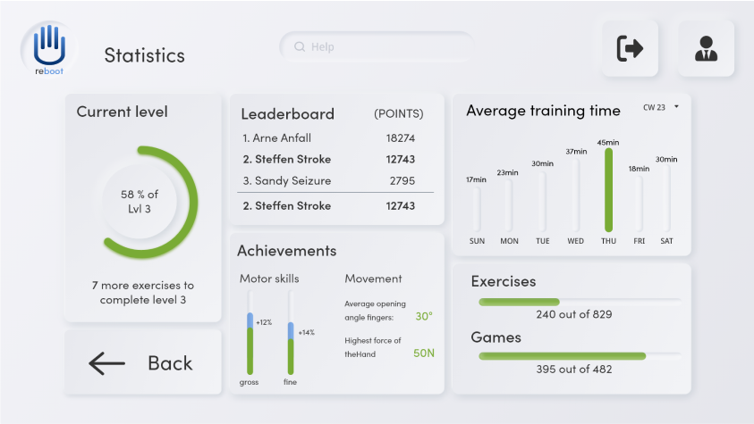

CareUI is the brain, skeleton and muscle behind chat and voicebots. It consists of 2 significant areas.
Statistics and Training. The statistics include the performance of the bots, inputs, outputs, texts,
ratings and many more. Furthermore, to the current point, this area also includes the statistics of the
FAQ section of the website.
Statistics about content performance are crucial for companies because they provide valuable insights
into how their content is resonating with their target audience. By analyzing metrics such as page
views, engagement rates, click-through rates, and conversion rates, companies can determine what types
of content are driving traffic and ultimately leading to conversions.
This information is especially important for companies that rely on content marketing as a primary
strategy for driving leads and sales. By identifying what types of content are most effective at
engaging and converting their audience, they can focus their efforts on creating more of this content
and refining their overall content strategy.
In addition, content performance statistics can help companies identify areas where their content is
falling short. By analyzing metrics such as bounce rates and exit rates, they can determine where
visitors are dropping off and make adjustments to improve the user experience and keep visitors on their
site longer.
The training includes entering answers to specific questions, creating chat flows and formatting texts.
This includes the training for the voicebots as well as the training for the chatbots. The training of
these is very important for several aspects.
Training chatbots is crucial for improving customer experience in today's digital age. As more and more
businesses move online, customers expect quick and efficient service at any time of the day or night.
Chatbots are an increasingly popular way to meet this demand, as they can provide 24/7 support without
the need for human agents.
However, a poorly trained chatbot can be frustrating for customers and may even drive them away from a
business. This is why it's important to invest in the training of chatbots to ensure that they can
provide helpful and accurate responses to customers' queries.
By using machine learning algorithms, chatbots can be trained to understand the nuances of natural
language and to recognize different types of customer requests. This enables them to provide more
personalized responses and to resolve issues more quickly.
Additionally, well-trained chatbots can help to reduce the workload of human agents, freeing them up to
focus on more complex tasks. This can lead to improved job satisfaction for agents and a better overall
customer experience.
When designing the tool, we worked completely independently from the company's UX department. The basic
functions were created by me and a senior UX designer at the beginning. Gradually, I took on the leading
role and, with the help of another dual student, completely took over the innovation work and the design of
new features. Later, the UX and UI design was completely handed over to us UX design students.Through the
constant exchange and repetitive feedback process, we were able to build a self-driving improvement process
in collaboration with product owners, stakeholders of the individual countries and the development team,
thus building an enormously helpful and productive platform for the company, which in the long run will
become a central tool for the company to promote customer satisfaction.
After 2.5 years, however, I temporarily handed over the product to my colleagues and another dual student
for UX design, as I received requests for support for a new project in which the training tool was to be
redesigned and I was to be completely responsible for the design and creation of new use cases and features.
I also accepted this in order to gain more experience in other areas as well. However, I was still available
for my colleagues at CareUI and Chatbot in an advisory role.
Chatbot
Chatbots can be a valuable tool for providing support to customers. These automated systems can assist
customers with their queries by answering frequently asked questions, providing information on products and
services, and guiding customers through troubleshooting processes.
Chatbots are available 24/7 and can handle multiple inquiries simultaneously, allowing for more efficient
and timely support. Additionally, chatbots can analyze customer data and interactions to improve their
responses and provide more personalized support.
By leveraging artificial intelligence and machine learning, chatbots can quickly learn and adapt to new
information and customer needs. They can also integrate with other systems, such as customer relationship
management tools, to provide a seamless customer experience.
The project that got me started in user experience design was the creation of a chatbot that could handle
smalltalk, item availability, opening hours, and FAQ questions. At the beginning of this process I was
primarily responsible for the design flows, training of the bot, analysis of competing products and
brainstorming, while a senior UX designer took over the design of the interfaces and the wordings.
After the introduction of new technologies, which enabled the chatbot to be used in more use cases, I got
more involved in the visual design of the second version. After building the CareUI, myself and another UX
design student took more responsibility for the overall design of the bot, its wording and the
conceptualization of new use-cases, which were prioritized and implemented in coordination with the product
owner, development team and stakeholders of the individual country subsidiaries.
With the introduction of the bot, we were able to reduce the traffic in the telephone system and notice a
general improvement in customer satisfaction. This also had a generally positive effect on the group, which
meant that chatbots became more present in the company and ideas were collected for further bot products
that would support both the customers and also be of use internally for the company's employees.
As a result, after the creation of V3 of the chatbot, the creation of a voicebot for the telephone system
was decided, which can answer common questions about delivery status, product availability and frequently
recurring questions. The main hurdles I had to consider here were that no visual output was possible and the
wording had to be all cleaner. I was supported by our internal partners in finding ideas and creating use
cases. The ideas were discussed, adapted and developed in recurrent loops with all partners.
After 2.5 years, however, I temporarily handed over the product to my colleagues and another dual student
for UX design, as I received requests for support for a new project in which the training tool was to be
redesigned and I was to be completely responsible for the design and creation of new use cases and features.
I also accepted this in order to gain more experience in other areas as well. However, I was still available
for my colleagues at CareUI and Chatbot in an advisory role.
myLearning
Training tools are essential in today's digital age, where the demand for high-quality, efficient, and
accessible training is rapidly increasing. These tools serve as a platform for businesses and organizations
to educate their employees or clients in various fields, such as product knowledge, customer service, and
compliance training, to name a few.
One of the significant advantages of using training tools is the convenience they offer compared to
traditional offline training methods. With training tools, learners can access the training materials and
resources from anywhere, at any time, using a computer, tablet, or mobile device. This feature is
particularly useful for businesses that have remote workers or clients, as it eliminates the need for
physical training sessions and reduces associated costs.
Another benefit of using training tools is the personalized learning experience they provide. Unlike
traditional classroom-style training, which often follows a one-size-fits-all approach, training tools can
be customized to meet the unique needs of each learner. This level of personalization ensures that learners
can focus on their specific areas of weakness and gain a deeper understanding of the training content.
Furthermore, training tools provide a more engaging and interactive learning experience. With features such
as videos, animations, and gamification, learners are more likely to remain engaged and motivated throughout
the training process. This approach can also help to improve retention rates and ensure that learners retain
the knowledge gained during the training.
Before the start of this project, a training tool developed by SAP had already been in operation for almost
4.5 years, but had only been marginally developed in terms of features and design both by SAP and
internally. At the beginning of the project, I spoke with the people responsible for the creation and
maintenance of training content about their requirements for the new training tool. I was given a free hand
for the designs and features. In terms of design, i stuck to our company's internal design style. in terms
of feature creation, information hierarchy and localization of features, i stuck to the existing tool, as
these aspects were highlighted as particularly positive by the users.
With the new design, however, i have also completely reworked or added some new features, such as the
success function.
In the old design, this was basically a page for the company's own statistics (completed training courses,
total training time, etc.). the basic functions of this, i.e. the statistics, have been retained and further
expanded and refined. In addition, so that the statistics are also actively used by the learners, I have
built in a gamification system that rewards learners with points and trophies. Furthermore, users can
compare themselves with each other and thus encourage each other to learn more than just completing the
mandatory training courses.
The latter was also explicitly requested by the department, as this should lead to training courses gaining
a higher presence and the tool gaining more attention. Furthermore, the tool should also be used more by
managers to guide and promote the careers and competencies of their employees.
This project will continue to be supported and developed over the next months or years. Due to constraints
stemming from the SAP system, the development of some features will encounter major problems. However, the
designs that I have created are intended to represent an optimal state and serve as a goal for the
transformation of the tool.
reboot
The product "reboot" is the result of a project between the Technical University of Ingolstadt, the
University of Toronto and the Queensland University of Design. The goal of this project was to design a
platform that allows doctors and stroke patients to perform remote rehabilitation therapy. The projects were
carried out in groups of 2 - 3 people and included all steps from research, creation of personas, several
design and approval loops, to documentation and creation of a product film.
Remote-controlled therapies for stroke offer numerous benefits to patients, including increased
accessibility, convenience, and personalized care. One of the primary advantages of remote therapies is the
ability to access care from anywhere, at any time, without having to physically travel to a healthcare
facility. This is especially important for stroke patients, who may have mobility issues or live in areas
with limited access to specialized care.
Design-wise, we decided to use 2 different design styles in the group. For the therapist a rather flat
design, while the patient received a design that focuses on large interaction areas.
A flat design is beneficial for a therapist in a remote application for stroke patients because it is
simple, easy to navigate, and user-friendly. Stroke patients often have cognitive and physical impairments,
making it difficult for them to use complex interfaces. A flat design with clear and straightforward
graphics and text can help them navigate the application easily, reducing frustration and confusion.
Moreover, a flat design can also help the therapist focus on the patient's needs and goals instead of the
application's design, leading to a more effective and efficient therapy session. Overall, a flat design can
provide an intuitive and accessible user experience, making remote therapy more comfortable and effective
for both the patient and therapist.
A design with large interaction areas can be particularly advantageous for stroke patients in remote therapy
applications. Stroke patients may experience motor and cognitive impairments that make it challenging to use
small buttons or icons. By providing larger interactive areas, patients can more easily interact with the
application and perform necessary tasks.

DeepRacer Cup #1 powered by XL2, AUDI AG, Audi Sport GmbH and Amazon Web Services (AWS)
The DeepRacer Cup #1, powered by XL2, AUDI AG, Audi Sport GmbH, and Amazon Web Services (AWS), is an
innovative competition that merges cutting-edge technology with the thrill of racing. This event was
designed to engage students, tech enthusiasts, and professionals in the exciting world of autonomous driving
and machine
learning.
Participants were given the opportunity to design, train, and race their own 1/18th scale autonomous cars,
utilizing
AWS DeepRacer—a platform that leverages reinforcement learning to enable the cars to navigate a physical
track
autonomously. The competition not only provided a hands-on learning experience but also fostered a community
of
innovators eager to push the boundaries of what autonomous technology can achieve..
As part of my responsibilities for the DeepRacer Cup #1, I was in charge of creating a wide range of visual
and
informational materials to support the event. This included the design and development of all graphics,
forms, and
documents required for the event. These materials were essential for promoting the event, guiding
participants, and
ensuring a smooth and professional experience for all involved..
My role required meticulous attention to detail and strong communication skills, as I was responsible for
coordinating with multiple stakeholders, including Audi, AWS, and the internal project team at XL2. This
collaboration was crucial to ensure that all materials were consistent with the branding and standards of
each
organization. I worked closely with the teams at Audi and AWS to align on visual identity, content
requirements, and
overall messaging, ensuring that every piece of collateral reflected the high standards and innovation
associated
with these brands.
Terminal App
The Terminal App is a pioneering, student-driven initiative at XL2, aimed at developing a robust platform
designed to seamlessly integrate and address all the critical use cases encountered in daily professional
life.
This ambitious project, which commenced in April 2024, is a testament to XL2’s commitment to innovation and
the
nurturing of young talent within the company.
Upon joining XL2 shortly after the project's launch, I was entrusted with the significant responsibility of
Lead
UX Designer. In this role, I have the privilege of shaping the user experience of a platform that is set to
become a central tool for our organization. My involvement in the project goes beyond design; I am actively
engaged in strategic discussions and decision-making processes, ensuring that the user experience not only
meets
but exceeds the expectations of our diverse user base.
One of the key challenges and opportunities in this project is the platform’s dual focus on both mobile and
desktop environments. With the current mobile version and an upcoming desktop version, responsive design has
been a critical consideration in my work. My focus is on creating a seamless and consistent user experience
across devices, ensuring that the platform is not only functional but also intuitive and visually appealing,
regardless of the screen size or operating system.
In addition to leading the UX design efforts, I am also responsible for conducting user research to gather
insights into the needs and behaviors of our target audience. This involves developing user personas,
mapping
out user journeys, and conducting usability testing to validate design concepts. I work closely with the
development team to translate these insights into actionable design solutions, ensuring that the technical
implementation aligns with the user experience goals.
Furthermore, I am involved in defining the information architecture of the platform, ensuring that the
content
is organized in a logical and user-friendly manner. This includes creating wireframes, prototypes, and
design
specifications that guide the development process. I also take the lead in developing the visual design
language
of the platform, which includes establishing a cohesive style guide that reflects XL2’s brand
identity.
A key aspect of my role involves close collaboration with the project lead and the executive management at
XL2,
who provide oversight and guidance. This interaction ensures that the project remains aligned with the
broader
objectives of the company while fostering an environment of creativity and innovation. Through this
collaboration, I help steer the project towards delivering a product that is both user-centric and
strategically
sound, positioning the Terminal App as a vital component of XL2’s digital ecosystem.
Tender Toucan
The project with VW involves the development of a tool aimed at automating the comparison of requirement
specifications (Lastenhefte) and functional specifications (Pflichtenhefte) for projects within the VW
Group. This tool is designed to streamline the process, making it more efficient and less error-prone,
thereby supporting project planners in their daily tasks.
The project began as a collaborative effort with students from the 6th semester of UX Design at the
Technical University of Ingolstadt. My initial role in the project was that of a "sparring partner" for the
students, providing guidance and feedback while also contributing to the creation of design concepts. This
collaboration allowed the students to gain practical experience in a real-world project while also
benefiting from professional input.
As the project progressed, I gradually took on the full responsibility of the designer for the tool. In this
expanded role, I am deeply involved in various aspects of the design and development process. My
responsibilities include the creation and refinement of detailed user flows, which map out the step-by-step
processes that users will follow when interacting with the tool. This ensures that the tool is not only
functional but also intuitive and easy to use.
In addition, I have played a key role in extending VW’s existing design system. This has involved developing
new components that are specifically tailored to the needs of this project, while also ensuring consistency
with VW’s established brand and design guidelines. My work on the design system has included creating
reusable components that can be easily integrated into other VW projects, thus enhancing efficiency and
maintaining a unified user experience across the organization.
Furthermore, I have been actively involved in conducting user research and testing, gathering feedback from
potential users within the VW Group to inform design decisions. This iterative process has allowed us to
make continuous improvements to the tool, ensuring it meets the high standards expected by VW.
Throughout the project, I maintain regular communication with the project leads and stakeholders at VW, as
well as with the executive management team at XL2. This collaboration is essential to ensure that the
project stays on track and that all design decisions are aligned with the broader strategic goals of both VW
and XL2.
XL2 and I are acting as external consultants and developers for this project, bringing our expertise in UX
design and tool development to the table. Our goal is to deliver a solution that not only meets the
technical requirements but also provides a seamless and user-friendly experience for the end-users within
the VW Group. Through close collaboration with VW’s project team, we are working to ensure that the tool
becomes an integral part of their project management workflow.
Notably, according to Frank Lloydl, the Chief Information Officer (CIO) of VW, this project is currently the
largest and most significant AI initiative within the VW Group. This underscores the critical importance of
our work and the high expectations surrounding the successful implementation of this tool.